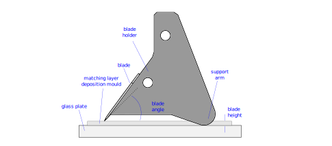
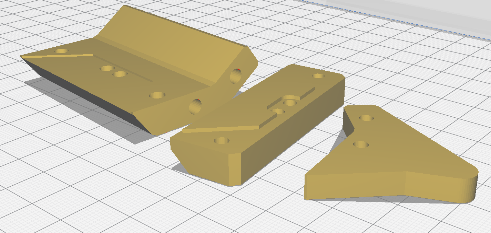

Custom Tooling Manufacture
Test1
Base Plate clamp strong plate angled support plate matching layer trimmer doctor blade coater glass holding jig PCB soldering jig pzt storage tray pzt clean tray
Manufacture Doctor Blade Coater
The doctor blade coater uses a 3D-printed blade holder to hold a safety blade at the correct angle. It is used during the deposition of the matching layers to scrape the tungsten-epoxy compound over the PZT elements.

Set the Blade Height
Note: This step is only required if a non-standard PZT thickness is being used: If the nominal PZT thickness is approximately equal to the default value of 1 mm, skip this step and use the default blade-holder.stl and support-arm.stl files instead.
During use, the angle of the blade is maintained by the support arm, which rides along the surface of the glass plate. For the support arm to have the correct vertical offset from the blade tip, the blade height must be defined as a parameter.
The blade height should be equal to the thickness of the matching layer deposition mould.

- Open the
QWML-deposition-mould.f3dCAD file in Fusion 360. - Record the
calculated_part_heightvalue from theSolid > Modify > Change Parametersmenu, - Open the
doctor-blade-coater.f3dCAD file in Fusion 360, - In the
Solid > Modify > Change Parametersmenu, set theblade_heightparameter to the same value ascalculated_part_height. - Export the blade holder and support arm as .stl files.
Notes: This doctor blade coater is designed for a specific safety blade (RS PRO 546-758m, part ID XX in BOM). If a different blade is used, the blade dimensions should be updated in the Change Parameters menu. The default blade-angle parameter used is 45 degrees. Preliminary testing showed that steeper blade angles produce a rougher surface finish, and that shallower blade angles require excessive downwards pressure, which can lead to blade-flexing and non-uniform matching layer thickness.
3D-printing
- Load
blade-holder.stlandsupport-arm.stlinto the Cura slicer software. - Use the following print orientation, to make sure the blade-holding features are flat. Use the 'Select face to align to the build plate' function.

Recomended Settings:
- Use 100% infill to make the blade-holder as stiff as possible, so that the blade can be clamped flat,
- PVA support required for
blade-holder.stlbut not forsupport-arm.stl. - 0.2 mm layer thickness,
- Enable top support interface.
Process the Blade-holder
- A smooth flat surface is required to clamp the blade without flexing,
- Use a scalpel to remove bumps created by the 3D-printer nozzle.
Install Threaded Inserts
- Use a soldering iron set to 275 degC,
- Place the M3 threaded insert [part ID 0] on to the soldering iron tip,
- Place the insert into the hole and push gently,
- As the plastic melts, push the insert into the hole, making sure that the insert is properly aligned.
- Keeping pushing until the insert sits below the surface,
- Gently twist the solering iron to remove it.
- Once all the inserts are installed, remove the raised edge around the insert by scraping with a scalpel.
Install the Safety Blade
- Degrease the blade using Isopropyl Alcohol and a paper towel.
- Attach the support-arm to the blade-holder using x2 of M3 x 12 mm screws [part ID 1].
- Pre-install x4 of M3 x 6 mm screws [part ID 2] into the blade holder, leaving space for the blade. Use washers [part ID 3] for the two outermost screws near the blade tips.
- Slide the safety blade underneath the heads of the screws. Make sure the blade is fully seated against the registering features.
- Gently tighten the screws, using the lowest tension required to grip the blade. Overtightening will lead to blade flex.
- Look along the blade to check its straightness. If there is a visible bend, check that the screws are not overtightened, and that the clamping surfaces are flat and clean.
PZT storage tray
Note: The default stl file is PZT Element Tray 16x17 10 mm length.stl, which is a 16 17 grid, supporting 272 PZT bars of dimensions 1 mm 1 mm 10 mm. To design a tray for more elements, or for elements with different dimensions, open the pzt-element-tray.f3d CAD file in Fusion 360 and edit the Nrows, Ncolumns, hole_diameter, pzt_element_length parameters in the Solid > Modify > Change Parameters menu.
-
Print the stl file with these settings:
- Low infill < 20% (non-structural)
- Coarse layer height 0.2 mm
- No support required
- Preview the part and make sure the holes are empty
-
Install the threaded inserts into the holes using a soldering iron set to 275C (adjust as necessary for non-PLA filaments),
- Manufacture a perspex lid with 4 mm clearance holes. If using the default stl file, the
PZT Element Tray Drawing.pdfdrawing can be printed out at 100% size to help mark out the hole pattern. - Label the rows with numbers and columns with letters using a permenant marker.